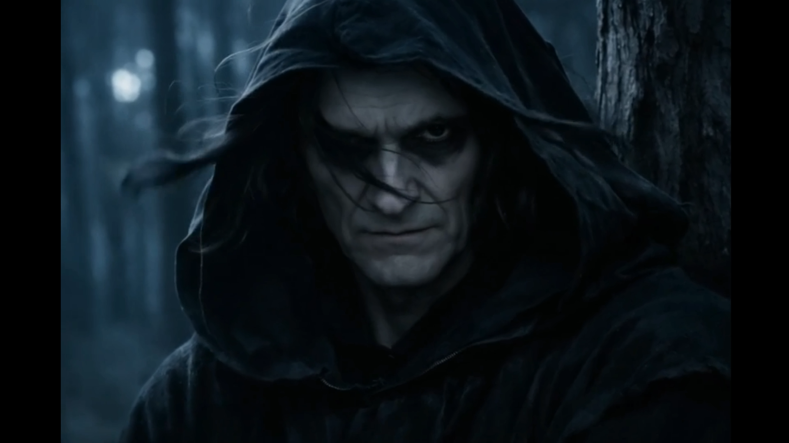
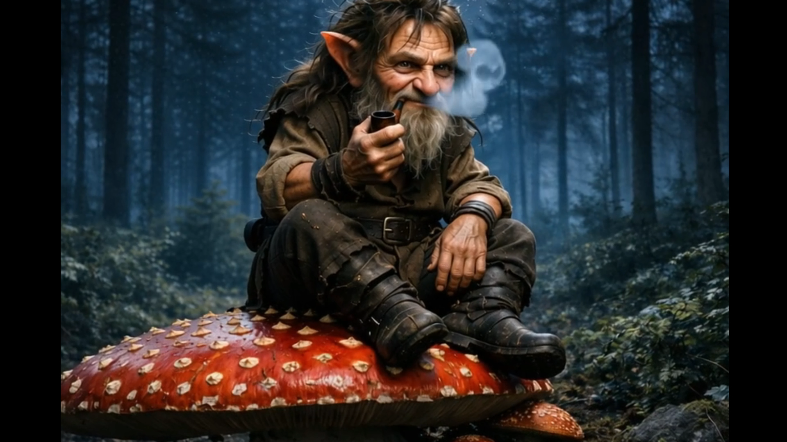
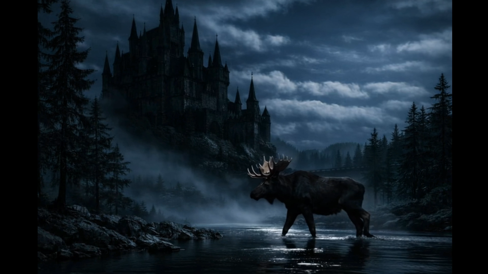

Описание фильма
«Безликая тень» — полнометражный тёмно‑фэнтезийный фильм 2026 года,
являющийся прямым продолжением истории, начатой в «Королевстве Морвейн».
Фильм раскрывает происхождение загадочного существа, лишённого лица,
но обладающего способностью видеть прошлое каждого, кого оно касается.
В центре сюжета — столкновение древних сил, пробуждённых нарушенным равновесием магии,
и героев, вынужденных противостоять тьме, стремящейся поглотить весь Морвейн.
Год: 2026
Формат: полнометражный фильм
Связь: продолжение фильма «Королевство Морвейн»
Вселенная: цикл Потерянная фея / Морвейн
Галерея



⟵ Вернуться к фильмографии